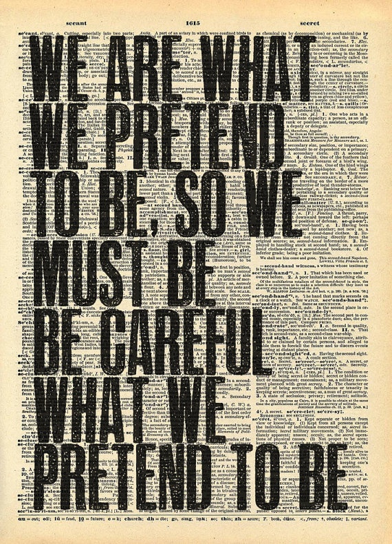
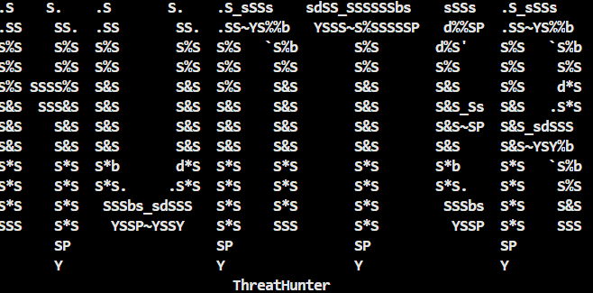
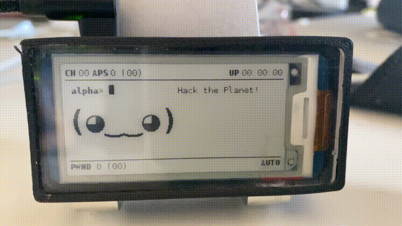

I’m a self-taught developer. I explored, broke things, rebuilt them, and kept going. I like building things that actually work and solve real problems.
Most of what I know comes from trying, failing, and figuring things out on my own. Outside of that
Outside of that, I think a lot, observe more than I speak, and try to improve step by step.
Nothing fast, nothing perfect — just consistent.
View Resume

A CLI tool that integrates with the VirusTotal API to scan files, URLs, and hashes for threats in real time. Built for quick triage without opening a browser.
Learned: API integration, CLI design, file I/O handling in Python, working with JSON responses.
Stack: Python · VirusTotal API · argparse · requests
View on GitHubSet up and configured a Pwnagotchi on Raspberry Pi to passively capture WPA/WPA2 handshakes. Studied how AI-driven tools adapt to wireless environments for ethical research.
Learned: Embedded Linux setup, wireless protocols, ethical hardware hacking, Raspberry Pi configuration.
Stack: Raspberry Pi · Python · Linux · 802.11 Protocols
View Project

Started with a question: how do things actually get hacked? Installed Linux for the first time, broke it, reinstalled it. Began reading about networks, terminals, and how systems work under the surface.